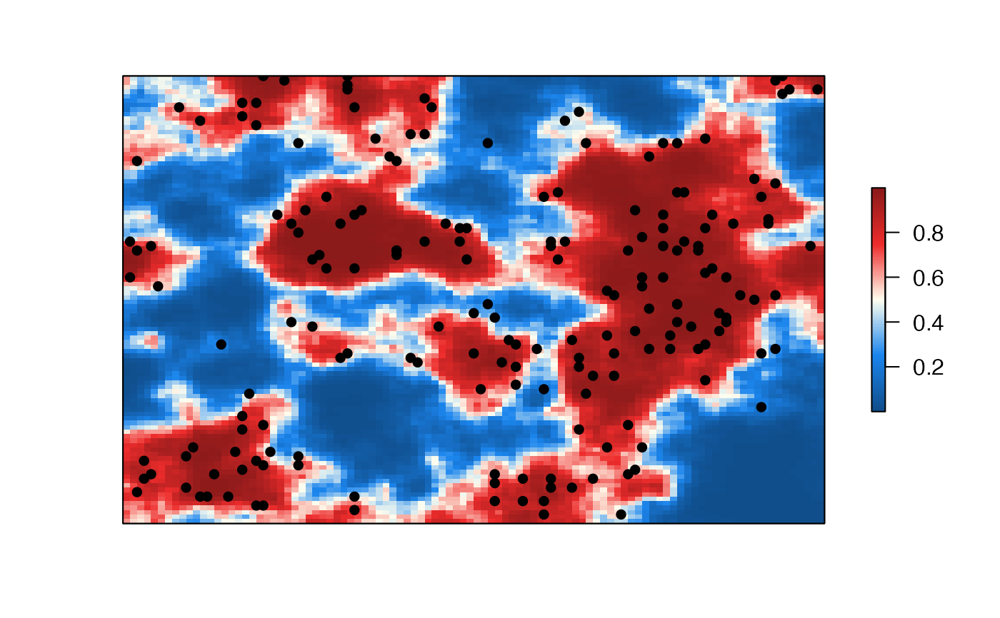

A function to calculate various ROC curve performance metrics given model predictions and the oberved samples
data_sim(
ncell = 100,
ncov = 5,
prob_missing = 0.95,
unif.bnd = c(10, 30),
mat.var = 0.05,
nsamp = 10000
)number of spatial grid cells
number of covariates to simulate
probability of nondetection (1-detection)
variance of the Matérn autocorrelation
number of random samples to draw
bounds of the uniform distribution draws of the scale parameter for the Matérn autocorrelation
A list containing the samples, the beta coefficients, and the raster brick
library(RandomFields)
#> Loading required package: sp
#> Loading required package: RandomFieldsUtils
#>
#> Attaching package: ‘RandomFields’
#> The following objects are masked from ‘package:RandomFieldsUtils’:
#>
#> RFoptions, checkExamples
library(raster)
df <- data_sim()
#> New output format of RFsimulate: S4 object of class 'RFsp';
#> for a bare, but faster array format use 'RFoptions(spConform=FALSE)'.
head(df$samples) #view the data.frame output
#> x y cov1 cov2 cov3 cov4 cov5
#> 1 22 99 0.09322100 -0.11369463 0.004553084 -0.121701890 0.42995216
#> 2 31 72 -0.42397271 0.29032789 -0.094940622 -0.020846851 0.39402671
#> 3 93 61 0.23023091 -0.13581937 0.109409418 -0.107746100 0.06830098
#> 4 11 46 -0.13001450 0.38349601 0.079044468 0.037702181 -0.06249699
#> 5 1 92 0.04070505 0.01011593 0.013651451 0.114901044 -0.03903302
#> 6 100 41 0.20466862 -0.25714707 0.235604316 -0.004368677 -0.08442235
#> prob.raw prob pred obs
#> 1 3.9435788 0.98098966 1 0
#> 2 2.3044392 0.90924403 1 0
#> 3 0.8463356 0.69979788 1 0
#> 4 -3.4367233 0.03116727 0 0
#> 5 -1.0255112 0.26395528 0 0
#> 6 0.3470299 0.58589715 1 0
table(df$samples$obs) #frequency of presence/absence
#>
#> 0 1
#> 9811 189
#make a color palette
colr <- colorRampPalette(c('dodgerblue4','dodgerblue2','ivory','firebrick2','firebrick4'))
plot(df$grid$prob, col=colr(100), xaxt='n', yaxt='n', asp=NA)
with(df$samples[df$samples$obs==1,], points(x,y,pch=16))
